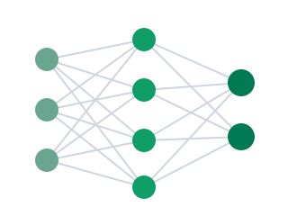

Dag 3
Sådan virker AI indeni, prompting med frameworks, agenter og kritisk sans. Og hvad det hele koster i strøm og vand.

Dagens overblik
De tre spor i materialerne er: hvad AI gør ved vores egen tænkning, hvordan du bygger din egen agent, og hvad AI faktisk koster i strøm og vand. Dertil en samlet guide til prompt engineering.
UCL’s diasshow: Dag 3
Her kan du bladre gennem det originale UCL-materiale direkte på siden. Brug pilene eller sidetallet til at følge undervisningen.
Program for dagen
Følg UCL-sporet fra venstre mod højre. Brug højre kolonne, når du vil koble dagens begreb til en praktisk aktivitet.
| UCL’s diasshow | Mine udvidelser |
|---|---|
| Opsamling fra sidst Slides 1-3: Refleksion siden sidst og fjerde del af musikøvelsen | Dag 2: Efter dagen Tag dine noter fra sidst med ind i opsamlingen. |
| Hvad består AI af? Slides 4-21: Maskinlæring, neurale netværk, hjernen sammenlignet med AI, dyb læring, generativ AI, sprogmodeller og vektordatabaser | Modul 6: Maskinrummet Ordene til diagrammerne, og hvorfor modellen kan tage fejl med selvtillid.Dias 4 · Udvid Modul 6: Typer af AIRegelbaseret, prediktiv, generativ: tre skel, der rækker langt.Dias 19 · Udvid Modul 6: MaskinrummetOrdene til diagrammet: derfor kan den formulere sig flot og tage fejl.Dias 20 · Udvid Modul 5: Kildeforankring (RAG)Vektordatabasen i praksis: NotebookLM slår op, før den svarer. |
| Prompting og seks gode råd Slides 22-37: Dagens plan, øvelse i Copilot og de seks råd til bedre prompts | Modul 3: Promptmønsteret Rolle, kontekst, opgave og format som fast greb.Dias 23 · Erstat Modul 3: Skriv og omskrivStil de tre spørgsmål til en ægte opgave fra dit eget skrivebord.Dias 29 · Udvid Dag 2: De syv byggeblokkeDe seks råd og de syv byggeblokke er samme værktøjskasse. |
| Frameworks Slides 38-58: RTF, TAG og RHODES med eksempler, øvelse med eget valg af framework og AI’s temperatur | Prompt-guiden på denne side Alle frameworks samlet ét sted, med scorecard og diagnose.Dias 54 · Udvid Prompt-guiden på denne sideAlle frameworks samlet ét sted: skim, og gå i dybden med to-tre. |
| Agenter Slides 59-63: Hvad en AI-agent er, og de fire internationale udviklingstrin | Byg din egen agent på denne side Fra begreb til noget, der virker, med guides til ChatGPT og Copilot.Dias 60 · Erstat Byg din egen agentGuides til ChatGPT og Copilot plus øvelsen: en agent, der kan én ting.Dias 62 · Udvid Papirklipsen: appen PaperclipFase 4 i praksis: værktøjet, der leder hele hold af agenter. |
| Computer Vision Slides 64-66: Hvad computersyn er, og hvordan det virker | Modul 6: Typer af AI Computersyn er den prediktive gren: genkendelse, ikke generering. |
| Opsamling og øvelser Slides 67-69: Dagens refleksion, øvelserne og dagens evaluering | Evaluér dag 3 To-tre minutter, anonymt, læses inden næste kursusdag. |
Spor 1: Hvad gør AI ved vores tænkning?
Underviseren fremhæver de to tekster som essentiel og skræmmende læsning. Læs mindst én af dem, og tag din egen erfaring med til drøftelsen.
Hukommelse og karakterer
Ny undersøgelse om sammenhængen mellem hyppig brug af chatbots, faglige resultater og hukommelse.
Åbn læsetippetKritisk tænkning
MIT-studie om, hvad der sker med hjerneaktivitet og ejerskab til teksten, når AI skriver for os.
Åbn læsetippetSammenhæng er ikke årsag
Begge tekster viser sammenhænge, ikke beviser. Spørg til metode, deltagerantal og hvad der egentlig blev målt. Det er den samme kildekritik, vi bruger på AI-svar.
- Hvornår har du selv mærket, at AI overtog tænkningen frem for at hjælpe den på vej?
- Hvilke opgaver vil du bevidst blive ved med at løse selv, og hvorfor?
- Hvad ville I sige til en kollega, der lader AI skrive alt, uden at læse det igennem?
Spor 2: Byg din egen agent
Materialerne indeholder en vejledning til hvert af de to store værktøjer. Vælg den, der passer til det, du har adgang til, og byg noget lille og afgrænset.
How to Create a ChatGPT Agent
Trin for trin: formål, instruktioner, kilder og afprøvning.
Åbn vejledningenCopilot Studio agent builder
Microsofts egen dokumentation, og den rigtige vej, hvis agenten skal kunne se arbejdspladsens indhold.
Åbn vejledningen
- Vælg en opgave, du laver ofte, og som følger et fast mønster. For eksempel at opsummere referater eller svare på den samme type henvendelse.
- Skriv agentens formål i én sætning: hvad skal den kunne, og for hvem?
- Giv den instruktioner, tone og eventuelle kilder. Skriv også tydeligt, hvad den ikke må gøre.
- Afprøv den på tre virkelige, men ufølsomme eksempler, og ret instruktionerne efter hvert forsøg.
- Vurdér til sidst: sparer den dig tid, og kan du stå inde for det, den leverer?
Spor 3: Hvad koster AI i strøm og vand?
To kilder, der ikke er enige. Det er netop pointen: uenigheden handler mest om, hvad man tæller med, og om hvilken slags opgave man måler på.
Alarmerende strømforbrug
Om energiforbruget ved generativ AI, især når det gælder billeder og video frem for tekst.
Åbn læsetippetGoogle måler i produktion
Første måling af energi, CO₂ og vand i et rigtigt AI-driftsmiljø. Underviserens vurdering: essentiel læsning med mere aktuelle tal.
Åbn artiklen (PDF)| Googles tal for én tekstprompt | Målt resultat |
|---|---|
| Energi | 0,24 Wh, altså mindre end ni sekunders tv. |
| Vand | 0,26 ml, svarende til cirka fem dråber. |
| Udvikling på ét år | 33 gange lavere energiforbrug og 44 gange lavere CO₂-aftryk pr. prompt. |
| Forbehold | Tallene gælder tekst, ikke billeder og video, og de er målt af udbyderen selv. |
- Læs de to kilders tal op mod hinanden. Hvor stor er forskellen, og hvad måler de hver især på?
- Hvad betyder det for konklusionen, at den ene kilde er udbyderen selv?
- Hold tallene op mod tallene fra dag 4 om danske datacentre. Passer billedet sammen?
- Hvornår er en almindelig søgning et bedre valg end en prompt?
Bonus: prompt engineering samlet ét sted
Materialemappen indeholder en samlet guide til prompt engineering i GPT-5-æraen. Underviserens vurdering: god opsummering af mange af de råd, vi har gennemgået, og mere til.
- Humanity’s Last Prompt Engineering Guide: Built for the GPT-5 Era (PDF)
- Metaprompten fra dag 4 (lad modellen bygge prompten sammen med dig)
- De syv byggeblokke fra dag 2 (opgave, rolle, format, kontekst, begrænsning, eksempler, data)
Materialer
Alt indholdet i dag 3-mappen, samlet efter funktion. Du behøver ikke læse alt.
Læseguiden
Underviserens egen prioritering af teksterne, med de tre spor og anbefalingerne.
AI og vores tænkning
De to tekster, underviseren kalder essentiel og skræmmende læsning. Vælg mindst én.
Agent-vejledninger
Én guide til ChatGPT og én til Copilot. Du skal kun bruge den ene.
Strøm, vand og prompts
Nyhedsartikel, akademisk artikel og den store prompt-guide.